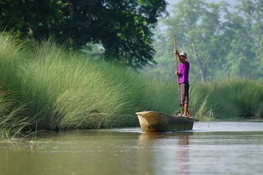
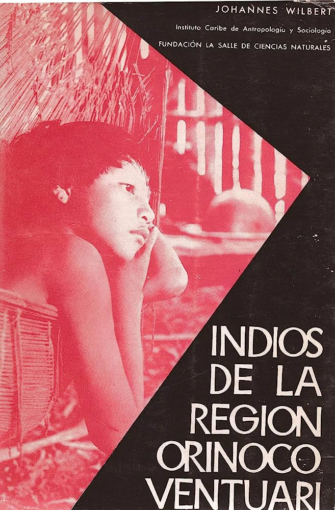

Historia
Los piaroas también son conocidos con el nombre de dearuwa y recientemente hicieron suya la autodenominación wótjüja, la cual significa “gente pacífica”. A lo largo de la historia, los piaroas permanecieron como una nación aislada, estableciendo contactos ocasionales con los misioneros jesuitas a finales del siglo XVIII. Durante el siglo XIX, el Amazonas se fue haciendo un poco más accesible para la población criolla, sin embargo, se puede decir que el contacto de los wótjüja con las autoridades y con la sociedad criolla alcanzó mayor intensidad a partir de la mitad de dicho siglo.
Piaroa navegando
Las informaciones que se tienen sobre este pueblo durante el siglo XIX provienen, en gran parte, de los importantes estudios realizados por Alejandro de Humboldt y Aimé Bonpland, científicos que se adentraron en las adyacencias del río Orinoco. También resaltan las investigaciones de Francisco Michelena y Rojas, quien bajo las órdenes del Gobierno venezolano penetró las zonas piaroas para promover la colonización de este pueblo en 1858, utilizando su ayuda para cruzar los raudales de Atures.

Alejandro Van Humbolt
Aimé Bonpland
Durante los comienzos del siglo XX se realizaron varias investigaciones sobre los piaroas, no obstante, puede decirse que una de las más significativas fue la de Johannes Wilbert, quien en su libro Indios de la región Orinoco Ventuari, dedicó un capítulo a este pueblo, así como a cada uno de los pueblos indígenas que habitaban en la región. Wilbert buscaba incentivar a los curiosos, investigadores y antropólogos para que se dirigieran a aquellas zonas y profundizaran mucho más en los datos que él había suministrado.
Libro "Indios de la Región Orinoco Ventuari"
El aislamiento de los piaroas se debió, en gran medida, al tiempo que estuvieron viviendo en la parte derecha del río Orinoco. La zona está conformada por los raudales de Atures y Maipures, las cascadas, los ríos y un bosque pluvial. Estudiar este vasto territorio fue sumamente dificultoso debido a las intrincadas condiciones topográficas, situación que colocó límites a la colonización española y a las misiones.
Los jesuitas fueron los misioneros que más contacto tuvieron con los indígenas que ocupaban las regiones medias del Orinoco. Sus primeras misiones se establecieron en 1661. Sólo existen datos poco precisos de una posible evangelización de una disminuida parcialidad de piaroa por parte de estos misioneros hacia el año 1684. Sin embargo, no se hacía referencia explícita a los piaroas como tal, sino que se reconocía a un pueblo que calificaban peroa, ubicándolos como una subetnia de los achagua. Los jesuitas nunca mencionaron explícitamente la palabra piaroa o dearuwa.
No se maneja información documental sobre los piaroas durante el agitado periodo de la Conquista. Aparentemente, una parcialidad importante de wótjüja sobrevivió a las embestidas de los colonizadores, quizás por su ya nombrada difícil accesibilidad geográfica.